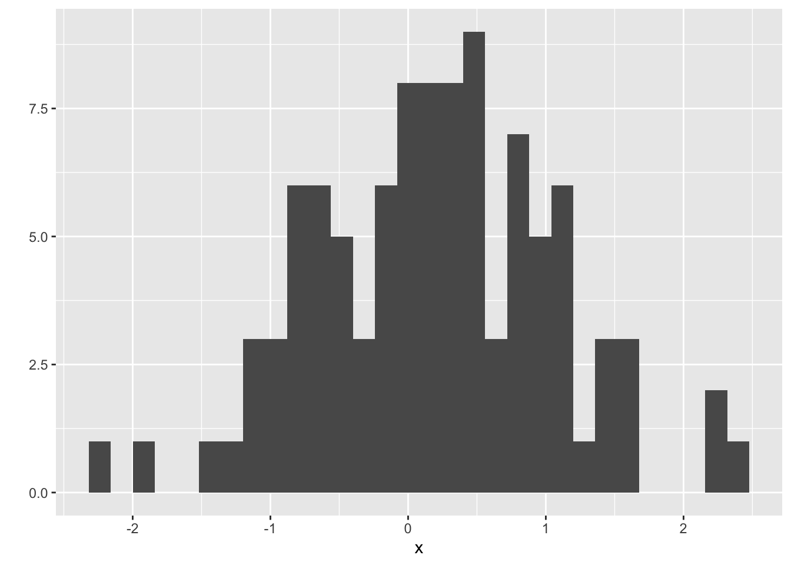

Chapter 2 Organization – R Projects and R Notebooks
2.1 Importing Packages
The R scripts you write will include functions in packages that are not included in Base R. These packages need to be downloaded from an internet server to your computer. You only need to do this once. But, each time you start a new R session, you will need to load a package using the library() function. Now is a good time to import packages that we will use
- Open R Studio and choose the menu item “Tools” > “Install Packages”
- In the “packages” input box, insert “ggplot2, data.table, emmeans, lme4, reshape2”. Make sure that “install dependencies” is clicked before you click “Install”
Again, once these are installed, you don’t need to do this again. You simply need to use the library() function at the start of a script.
2.2 Create an R Studio Project for this Class
- Create a folder named “BIO_413”
- Within this folder, create new folders named
- “notebooks” – this is where your R notebooks are stored
- “R” – this is where R scripts are stored
- “data” – this is where data that we download from public archives are stored
- “output” – this is where you will store fake data generated in this class
- “images” – this is where image files are stored
- Open R Studio and click the menu item File > New Project…
- Choose “Existing Directory” and navigate to your BIO_413 folder
- Choose “Create Project”
- Check that a file named “BIO_413.Rproj” is in your BIO_413 folder
2.3 R Notebooks
A typical statistical modeling project will consist of:
- reading data from Excel or text (.csv or .txt) files
- cleaning data
- analysis
- generating plots
- generating tables
- writing text to describe the project, the methods, the analysis, and the interpretation of the results (plots and tables)
The best practice for reproducible research is to have all six of these steps in your R Notebook. Too many research projects are not reproducible because the data were cleaned in Excel, and then different parts of the data were separately imported into a GUI statistics software for analysis, and then output from the statistics software was transcribed to Excel to make a table. And other parts of the analysis are used to create a plot in some plotting software. And then the tables and plots are pasted into Microsoft Word to create a report. Any change at any step in this process will require the researcher to remember all the downstream parts that are dependent on the change and to re-do an analysis, or a table, or a plot, etc. etc.
The goal with an R Studio Notebook is to explicitly link all this so that changes in earlier steps automatically flow into the later steps. So, at the end of a project, a researcher can choose “run all” from the menu and the data are read, cleaned, analyzed, ploted, tabled, and put into a report with the text.
This means that you have to think of the organization of the R code that your write in a Notebook. Your cannot simply append new code to the end of a script if something earlier (or above) is dependent on it. You need to go back up and insert the new code at some earlier (and meaningful) point.
For example, an R chunk generates 100 random normal values and then plots these with a histogram. This was the chunk that I wrote
x <- rnorm(n)
qplot(x)When I ran the chunk, I got the error “Error in rnorm(n) : object n not found”. I was using the function rnorm() to generate values but I hadn’t assigned any value to n yet, so I got the error. To get this to work properly, I could have just typed n <- 100 in the console and then re-run the script but I want it to work properly on a fresh run of the chunk (after quitting and re-opening R Studio) so I instead inserted n <- 100 at the start of the chunk, like this:
n <- 100
x <- rnorm(n)
qplot(x)2.3.1 Create an R Notebook for this Chapter
- The top-left icon in R Studio is a little plus sign within a green circle. Click this and choose “R Notebook” from the pull-down menu.
- Change the title of the notebook to “Notebook_01-organization”
- Delete the default R Markdown text starting with “This is an [R Markdown]…”
Now write some text documenting which packages you installed.
2.3.2 Create a “setup” chunk
- Click on the “Insert” menu on the right hand side of the script (R Markdown) pane and choose “R”. This will insert an R code chunk into your R markdown document.
- The first R chunk of a notebook should be a setup chunk. Name the chunk “setup”
- load the libraries ggplot2 and data.table and click the chunk’s run button (the green triangle to the right of the chunk)
library(ggplot2)
library(data.table)I added the chunk option “message=FALSE”. Run your chunk with and without this as an option.
2.3.3 Create a “simple plot” chunk
- Create a new chunk and label it “simple plot”
- insert the following R script and then click the chunk’s run button. Do you get a plot?
n <- 100
x <- rnorm(n)
qplot(x)## `stat_bin()` using `bins = 30`. Pick better value with `binwidth`.